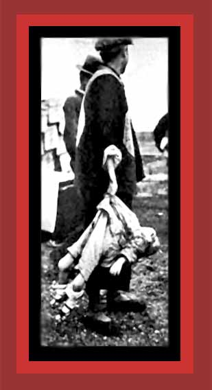

| The Rape of Nanking is one of the more notorious of World War II democides. Perhaps 200,000, possibly even 300,000 Chinese, were massacred after the Japanese Army seized this capitol of Nationalist China. However, this democide was but one of many carried out from one end of Japanese occupied China to the other. In total, out of the over 6,000,000 the Japanese military murdered during World War II, near 4,000,000 were Chinese. Here is one of them, a murdered child being carried off for burial by Nanking residents. For documentation, see China's Bloody Century, Death By Government and Statistics of Democide. Source: "Nanking organization: WWW Memorial to Commemorate the Victims of the Rape of Nanking. |